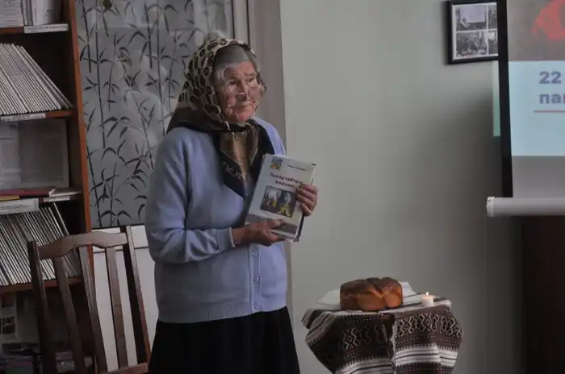

Марія Сазонова – дочка і слуга свого народу. Це поетеса, віршам якої притаманні щирість, поєднання особистого і громадянського, гостре відчуття сучасності.
Її зоря засвітилася в місті Хоролі. Росла і виховувалася в багатодітній сім'ї. Нелегке було дитинство. Адже, коли їй не було іще 1 року, помер батько. Сім'я залишилася без годувальника. Тільки-що закінчивши перший клас, вона віч-на-віч зустрічається з голодним 1932-м роком. А той ніким не забутий 1933-й рік назавжди розлучає її із старшою сестрою, яка померла, як і багато інших людей, від голоду.
Перед нею поставив світ з своєю природною глибинністю. Доля заносить її в дитбудинок цього чарівного містечка Хорол, де в 1941р. вона закінчила десятий клас. З цього світу вона обрала все найкраще, тут же, в школі, її серце почало вимолювати перші рядки, а перо клало їх на папір. Але раптом почалася Велика Вітчизняна війна, яка принесла страждання і муки всьому нашому народові. Не обминуло горе і Марію Максимівну. Її разом з багатьма іншими дівчатами висилають в Німеччину на примусові роботи, де вона пробула до 1945 року. Тут писала вірші. Один із віршів ми зараз послухаємо: "Невільниці". Закінчилась війна. Марія Максимівна повернулася на Батьківщину. На той час одна із сестер працювала у місті Городенко, куди і взяла її. А життя визначала мрія – мрія стати вчителькою. Так постановила собі, так вирішила. Тому поступила в учительський інститут. Все глибше входила в духовний світ свого народу. І ось збулася мрія. Після закінчення інституту працює учителем у Мишинській, а потім і в Сопівській середній школі. Це були 1955-1962 роки. Тут же, у нашій школі Марія Максимівна пропрацювала 24 роки. У 1979 році вона пішла на пенсію. Появилося більше вільного часу. Почала більше писати. Її вірші друкуються в газетах. Вони несуть людям любов. Любов – до всього, але перш за все до найріднішої для кожного людини – матері. Її збірка "Найкращий друг", яка вийшла у 2001-му році, починається однойменним віршем; якого ми зараз послухаємо. (читаються вірші "Найкращий друг", "Матері") Вірші поетеси – це її діти. І приносять вони так само, як і діти, і радість, і біль. Про своє призначення писати їх вона розповідає у поезіях "Ріка" та "До музи" (учні читають ці поезії). Щоб пізнати поета, радив колись Гете, треба піти в його країну. Що ж таке країна? Це не просто географічне поняття. Це і земля, де він народився і зростав, де вбирав у себе безліч вражень дитинства, що формували основу його духу. Це і земля, де він народився і зростав, де вбирав у себе безліч вражень дитинства, що формували основу його духу. Це і доба, що дала настроєність і масштаб цьому духові. Це і люди, в яких і через яких поставали йому земля і доба, і рідна мова. Марія Максимівна до того ж – поет-природолюб. Вона щиро закохана у красу рідного краю, у природні витоки щедрої української землі, у навколишнє життя. Свідченням цього є її поезії "Дуб", "Ліс", "Град" та інші.